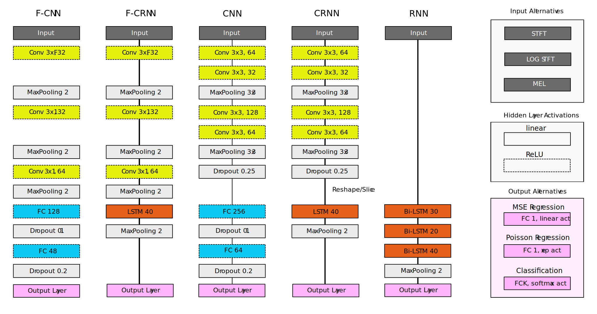
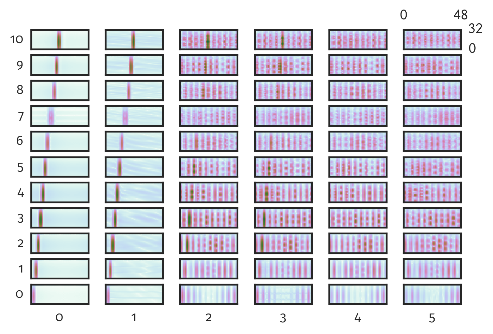
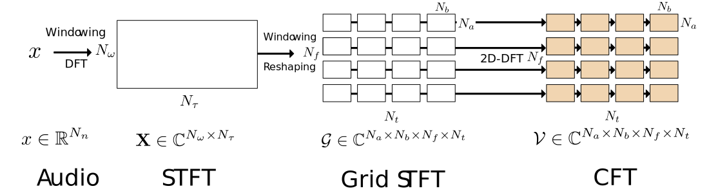
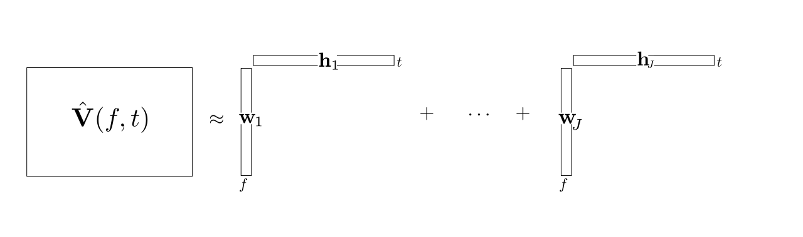
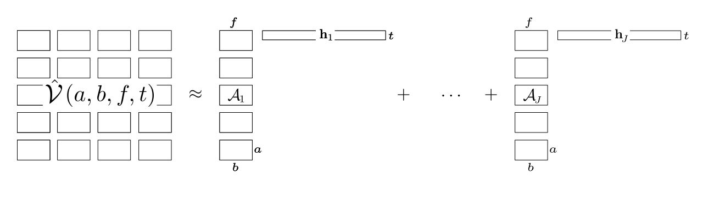

Model selection

Architectures

Architectures
CRNN

Scenario: Unison Separation


Speaking Rate

Extension for real world data
Results SiSEC 2016

A brief history: model-driven methods
Redundancy for the accompaniment: NMF
- Spectral templates
- Low-rank assumptions
- Bad generalization

A brief history: model-driven methods
Redundancy for the accompaniment: RPCA
- Low-rank for music
- Vocals as unstructured
- Strong interferences in general

A brief history: model-driven methods
Redundancy for the accompaniment: REPET
- Repetitive music
- Non-repetitive vocals
- Solos in vocals

A brief history: model-driven methods
Modeling both lead and accompaniment: source filter
- Harmonic vocals
- Low-rank music
- Poor generalization

Step 1: Short-Time Fourier Transform

$\mathbf{X} \in \mathbb{C}^{352 \times 279}$
Step 2: Common Fate Transform (CFT)

STFT Grid $\mathcal{G} \in \mathbb{C}^{32 \times 48 \times 11 \times 6}$ |

CFT $\mathcal{V} \in \mathbb{C}^{32 \times 48 \times 11 \times 6}$ |
In Detail

Learned Factors
|
P |
A |
NTF Comparison of number of components
- All factorisations ran for 100 iterations and were repeated five times.
- We chose $J = (2 \dots 6)$ components for each factorisation.
- For j > 2 we used oracle clustering by SDR
Dataset
- Single pitches (C4 at 261.63 Hz)
- Viola
- Cello
- Tenor sax
- English horn
- Flute
- $\rightarrow$ ten mixtures of two instruments each
- Mixtures generated with a simple A — B — (A + B) scheme.
- Data were encoded in 44.1 kHz / 16 bit.
Common Fate Transform
Number of Components

Evaluation Results

Evaluation
Common Fate Transform (CFT)
$\mathbf{X} \in \mathbb{C}^{352 \times 279}$
Parameters
- STFT Window Size: $1024$
- STFT Hop Size: $512$
- CFM Window Size $(Na,Nb) = (4, 64)$
- CFM Hopsize $(Na,Nb) = (2, 32)$
Signal Separation
- Compute the CFT from audio signal to get tensor $\mathcal{V}$
- Take the magnitude $|\mathcal{V}|$
- Initialise $\mathcal{A}$ and $\mathbf{h}$ with random non-negative values
- Apply multiplicative update rule to minimize $\beta$-divergence
- Synthesise factorised components using Wiener filtering
- Inverse CFT
NMF
 $$\sum\limits_{j=1}^{J} \mathbf{w}_{j}(f) \circ \mathbf{h}_{j}(t) $$
Common Fate Model
 $$\sum\limits_{j=1}^{J} \mathcal{A}_{j}(a,b,f) \circ \mathbf{h}_{j}(t)$$
Common Fate Model
 $$\sum\limits_{j=1}^{J} \mathcal{A}_{j}(a,b,f) \circ \mathbf{h}_{j}(t)$$
$$\sum\limits_{j=1}^{J} \mathcal{A}_{j}(a,b,f) \circ \mathbf{h}_{j}(t)$$
CPD/PARAFAC/NTF
 $$\sum\limits_{j=1}^{J} \mathbf{w}_{j}(f) \circ \mathbf{m}_{j}(b) \circ \mathbf{h}_{j}(t)$$
$$\sum\limits_{j=1}^{J} \mathbf{w}_{j}(f) \circ \mathbf{m}_{j}(b) \circ \mathbf{h}_{j}(t)$$
Evaluation Results
- NMF Non-Negative Matrix Factorization
- MOD CP on modulation spectrogram
- CFM Common Fate Model
- CFMM Common Fate Magnitude Model
- CFMMOD CFMM with $a=1$
- HR-NMF High Resolution NMF model
From fully connected to the simple recurrent net

From fully connected to the simple recurrent net
From fully connected to the simple recurrent net
From fully connected to the simple recurrent net
The simple recurrent net
- $y_{t}=f\left(linear\left\{ x_{t},y_{t-1}\right\} \right)$
- Similar to a Markov model
- Exponential decay of information
- Vanishing or exploding gradient for training
- Limited for long-term dependencies
P. Huang, et al. "Deep learning for monaural speech separation". (2014) ICASSP.
The long short term memory (LSTM)
The long short term memory (LSTM)
The long short term memory (LSTM)
The bi-LSTM
- LSTM are causal systems
- Predicts future from past
The bi-LSTM
- We can use anti-causal LSTM
- Different predictions!
The bi-LSTM
- Independent forward and backward
- Outputs can be concatenated
- Outputs can be summed

Fabian-Robert Stöter
Separation and Count Estimation for Audio Sources Overlapping in Time and Frequency